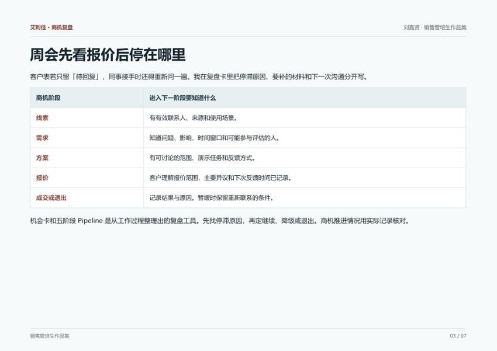
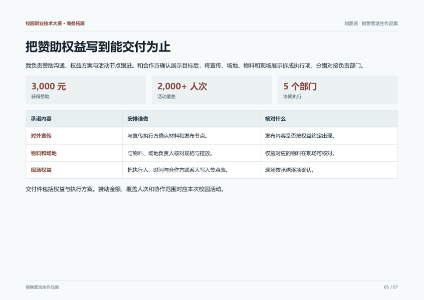
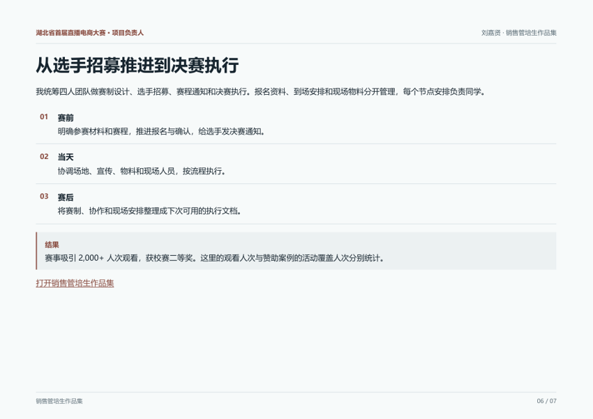

Pipeline 复盘销售岗位实践
艾利佳 · 客户开发
用业务问题、决策角色和时间窗评估机会，每次跟进约定下一步。
查看案例销售管培生作品集
结合一线客户开发与校园商务拓展，我展示怎样判断采购需求、推进报价和跟进合作承诺。

Pipeline 复盘销售岗位实践
用业务问题、决策角色和时间窗评估机会，每次跟进约定下一步。
查看案例
合作权益方案真实项目
将合作方诉求写成可兑现的权益，获得 3,000 元赞助。
查看案例
赛事执行流程项目负责人
统筹四人团队串联报名、通知、到场与决赛执行。
查看案例核对联系人、使用场景、时间窗口和负责方。
在投入演示和报价前，核对决策角色、成功标准与反馈时间。
记录阻塞点、下一步和到期日，再决定继续、降级或退出。
销售 · 客户开发与报价跟进
通过电话、线上与线下触达了解采购需求，说明报价与常见异议，用 Excel 记录跟进阶段和下一步。
看对应案例 ↗客户服务实习 · 客户沟通
处理售前咨询、物流与退换货，跟进跨部门处理结果，沉淀常见异议和回应口径。
东北大学 · 工商管理硕士在读
湖北工业大学 · 电子商务本科
迭代记录
机会卡增加决策角色、异议、下一步和到期日。周会先看停滞及退出原因，再看新增机会，让跟进投入有依据。
核对联系人、使用场景、时间窗口和负责方。
在投入演示和报价前，核对决策角色、成功标准与反馈时间。
记录阻塞点、下一步和到期日，再决定继续、降级或退出。
销售岗位实践
在艾利佳销售岗位，我负责客户触达、需求沟通、报价说明和后续跟进。机会卡和 Pipeline 复盘流程来自对这些工作步骤的整理。
真实项目
项目负责人